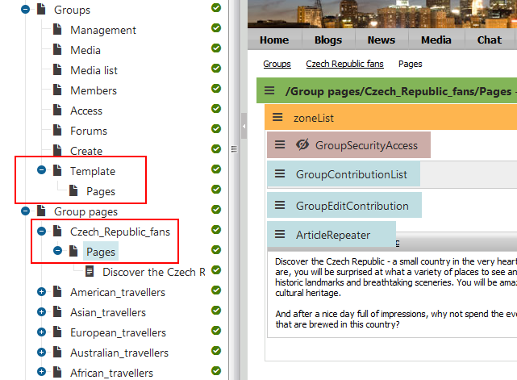

Allowing users to create groups
You can enable site users to create new groups by placing the Group registration web part on your site. You have to set the following properties of the web part:
Template source alias path - specifies the alias path of the page that will be used, together with the pages stored under it, as a template for groups created by the web part. If empty, the value of the Settings -> Community -> Group template path field is used.
Template target alias path - specifies the alias path where the pages copied from the Template source alias path are loaded when a group is created.
Automatically create forum - if selected, a forum group and a General discussion forum are automatically added under the created group.
Automatically create media library - if selected, a media library is automatically added under the created group.
Automatically create smart search indexes - if selected, a smart search index is automatically created for the pages of the created group, as well as for the new forum if the Automatically create forum property is enabled.
Group profile URL path - specifies the alias path of the page containing the group profile. You can use the {groupname} wildcard to substitute for the name of the current group.
Combine with default culture - if enabled, the default culture is used when creating group pages in a culture where the source or target node was not found.
Group name label text - specifies the text displayed in the form before the field where the group name is entered.
Text after successful registration - specifies the text displayed when a group is successfully created.
Text after successful registration with approving - specifies the text displayed when a group is successfully created, but requires an administrator's approval to be published on the web.
Require approval - if selected, the group has to be approved by a site administrator before its publishing on the website.
Redirect to URL - specifies the URL where the user is redirected after creating the group.
Hide form after registration - if selected, the form is hidden after creating the group.
Group page templates
Each group has its own section on the website where its content is stored - so called group pages. When adding the Group registration web part to your site, you have to specify the Template source alias path and Template target alias path properties. These two properties are essential when creating the group pages section of each group.
The page specified by the Template source alias path and all its sub-pages are copied to the location specified by the Template target alias path.
To get a better idea of how this works, you can take a look at the sample Community Site. On the site, the Group registration web part is configured in the following way:
Template source alias path: /Groups/Template
Template target alias path: /Group-pages
As you can see in the screenshot below, there is the /Groups/Template page with one sub-page: Pages. When a new group is created, its title page is created under /Group-pages and the Pages page is created under it. The web parts placed on the title page are identical to those placed on the Template page. Web parts on the Pages page are also identical to the source Pages page. Under Pages, all group pages will be stored.

Sources for group pages and their application
The system allows you to configure any page to be owned by a group. See Working with groups.
In Settings -> Community, you can enable or disable the Use parent community group for new pages option. If selected, all newly created pages inherit the group assignment from their parent page.